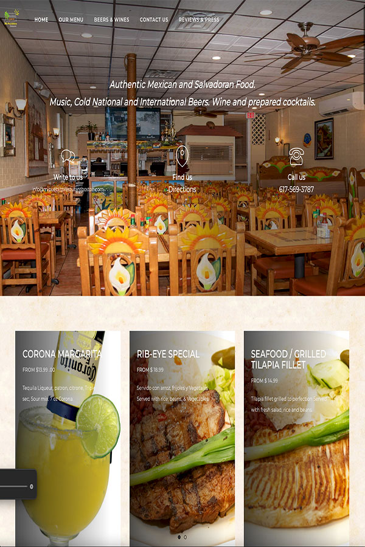

¿Necesita un sitio web pulido y profesional que se posicione en Google y haga crecer su negocio?
Ofrecemos diseño web personalizado en Chelsea, MA, desarrollo experto en WordPress y SEO orientado a resultados, ayudando a las empresas locales a tener éxito en línea desde 2005.
Sitios web modernos que se posicionan y convierten.

JA Armira --GDProWebDesigns--, es un disenador y programador web, localizado en Everett MA, ayudamos a empresas locales en Chelsea, East Boston y cualquier ciudad en Massachusetts con servicios profesionales de diseño y desarrollo de sitios web con WordPress, u otra plataforma de diseno web que le sea mas familiar. Le proveemos mantenimiento técnico y nos encargamos de que su negocio aparezca en busquedas en Google, Bing, Yahoo y otros motores de busqueda con SEO local o a nivel general.
Ofrecemos soluciones modernas y económicas para negocios pequeños y medianos. Ya sea que necesite rediseñar su sitio web, hacerlo móvil, o mejorar su presencia en Google, estamos listos para ayudarle.
Con más de 15 años de experiencia, nuestro equipo está comprometido a ofrecerle un servicio excepcional y resultados efectivos. Nos especializamos en ayudar a negocios locales a destacar en línea.
Hablamos español e inglés. Podemos visitar su negocio o comunicarnos por teléfono o videollamada para una consulta personalizado.
Llámenos al Solicite una cotización sin compromiso